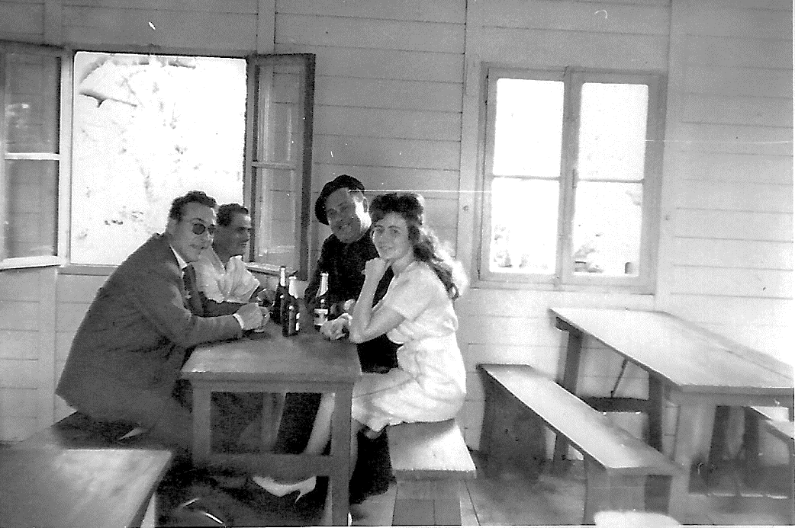
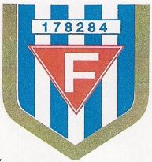
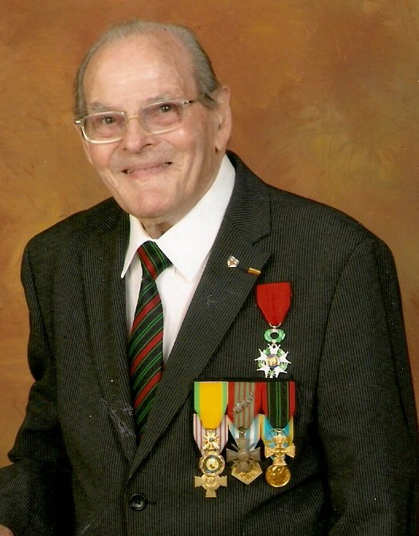

Jacques BAUDRY
Premier animateur culturel à Rouhling
Souvenirs et parcours de vie
Jacques BAUDRY est décédé à l'âge de 99 ans, il a eu une vie exemplaire dont une partie à Rouhling.Il a été un animateur emblématique de la vie associative dans l’histoire de la vie à la Cité et dans la commune de Rouhling de 1955 à 1970.
Né, le 02 juin 1919 dans les Yvelines, quatrième et dernier de sa fratrie, Jacques, encore bébé, est orphelin quand Madeleine, sa mère, décède de la tuberculose. Il sera alors élevé par ses tantes maternelles et fréquentera l'école puis le collège de Pons en Charente-Maritime. De ses écoles il va garder une très belle écriture.Adolescent, il va commencer à travailler avec son père, artisan, qui fabrique des châssis de poste de radio pour les nombreux fabricants de poste de TSF, dans un rayon de 200 km autour de Bordeaux.
Arrive la guerre. La Classe 1939 est appelée sous les drapeaux en fin d'année. Jacques est incorporé à Bordeaux. Après ses classes, il devient Brigadier, puis Brigadier-Chef. En avril 1940, alors que le pays est encore dans la "Drôle de guerre" derrière la ligne Maginot, les Rouhlingeois sont en Charente, lui est en formation militaire à Fontenay-le-Comte.
Au mois de mai, les armées françaises sont enfoncées. Le 1er juin 1940, le bataillon dans lequel se trouve Jacques est envoyé au front dans la région de Soissons. Le 10 juin, il se trouve sous le feu de l'ennemi, à Mareuil-sur-Ourcq, dans la défense de Paris. Il a 21 ans. Son comportement lui vaudra l'obtention de la Croix du Combattant, de la Croix de Guerre et la Légion d'Honneur en 2011.Dans la même période, Georges RICHER, 21 ans, frère de sa future épouse en 1945, est tué à Mauvages, au sud de Toul et Nancy.
Le bataillon bat en retraite à pied, franchit la Loire et évite la captivité. L'armistice est signé le 22 juin. L'armée d'armistice est mise en place. Jacques, comme un grand nombre de soldats de la Classe 1939, est incorporé dans l'armée d'armistice et se trouve en caserne à Cahors.
Les "Français libres" reprennent Libreville, au Tchad, aux forces de Vichy. En conséquence, il est décidé de renforcer l'armée d'Afrique du Nord. Le 6 Janvier Jacques embarque à Marseille à, destination de Casablanca. Il va passer une année en caserne à Taza dans le nord du Maroc. Pas de combats, le calme plat. Il apprendra quelques mots d'arabe !Il est rapatrié en métropole en novembre 1941 et est envoyé au 92ème RI de Clermont-Ferrand, en caserne à Riom.
Novembre 1942, les Allemands envahissent la zone libre. L'armée d'armistice est dissoute. Jacques est rendu à la vie civile. Il rentre à Bordeaux et retravaille avec son père.
Début 1943, le STO est institué. Aller travailler en Allemagne ou se cacher ? Chacun doit prendre une décision difficile qui, d'un côté ou de l'autre, le conduit en milieu hostile voire dangereux. Les familles sont déchirées. Alors que son frère ainé est devenu travailleur volontaire en Allemagne, Jacques décide de se soustraire au STO. Une filière, bien organisée, l'envoie de Bordeaux à Clermont-Ferrand et il se retrouve, le 18 avril, avec 80 autres jeunes, par groupes de 10, dans des hameaux autour d'Arlanc, chef-lieu de canton.
Jacques, maquisard, va passer trois mois dans le hameau de Chanteduc (Drôme). On mangeait du pain et beaucoup de patates achetées, avec l'argent fourni par le mouvement Franc-Tireur, aux paysans du secteur qui soutenaient les réfractaires au STO. On avait quelques armes disparates. Notre chef, Pierre CERVEAU, avait 25 ans. On attendait des parachutages de Londres ! On rêvait d'actions !
Cette vie à Chanteduc aurait pu durer deux ans, jusqu'en 1945 ! Mais début juin, les gendarmes d'Arlanc arrêtent un groupe de six jeunes dans leur cache. Les voilà au « gnouf » (7) à la gendarmerie d'Arlanc. Qu'est qu'on fait ? On va les libérer ! On a des armes ! Un groupe de dix (un commando avec révolver, mitraillette et fusils) entrera dans la gendarmerie et les gendarmes ouvriront les portes pour relâcher nos camarades.
Avec Jacques, un groupe de soutien, sera en attente à 200 mètres, pour au besoin, prêter main forte !Mais les gendarmes n'ouvrent pas les portes. Des coups de feu claquent. Un gendarme est tué, un autre gravement blessé. CERVEAU se blesse mortellement avec son révolver en voulant donner un coup de crosse. Les six garçons sont libérés et tout le monde repart se cacher dans les hameaux. Trois jours plus tard des escadrons de Gardes Mobiles sont envoyés pour ratisser le secteur. Presque tous les maquisards sont rapidement arrêtés.
Prison de Thiers. Prison de Riom. Tribunal de Riom. Jacques et le groupe de soutien écopent de cinq années de prison(1). Transfert à la Centrale d'Eysses (2) où les autorités ont décidé de regrouper 1200 prisonniers politiques du sud de la France, en octobre 1943. Jacques s'y distingue en participant à la réalisation de la piste d'athlétisme dans une des cours de la Centrale, en participant aussi aux "fêtes récréatives".
Mai 1944, les Allemands ont besoin de plus en plus de main d'œuvre. En accords avec les autorités françaises ils vident et font vider les prisons. Transfert, en wagon à bestiaux, d'Eysses (commune de Villeneuve-sur-Lot) au camp de transit de Compiègne-Royallieu. La SNCF n'oublie pas de se faire payer par les autorités, françaises et allemandes, le prix du voyage de chaque prisonnier. A cent par wagon, c'était moins cher ! Quinze jours de répit.
Le 18 juin 1944, transfert, en wagons à bestiaux de Compiègne vers l'inconnu : Reims, Sarrebourg, Haguenau, Karlsruhe, Ulm, Augsbourg .... Dachau. Le train suivant qui quitte Compiègne le 2 Juillet sera "Le train de la mort". Sur 2162 transportés, 530 vont mourir pendant le voyage (3).
Pour Edmond MICHELET (4), à l'arrivée à Dachau c'est l'effarement. Mise en quarantaine pour tous les nouveaux arrivants. Au mois d'août les prisonniers, en "costumes" rayés, sont envoyés dans les camps de travail de Dachau. Plusieurs centaines partent à quelques kilomètres, au camp d'Allach près de Munich, où les attendent les usines BMW et des conditions de vie horribles ... en quelques mois, un quart d'entre eux vont mourir. D'autres sont envoyés à Hersbruck près de Nuremberg, c'est pire ! Jacques et deux cents autres sont envoyés à Kempten où les ateliers des filatures sont vidés de leurs machines pour accueillir des ateliers Messerschmitt, au fin fond de la Bavière, à l'abri provisoire des avions Anglo-Américains.
Kempten reçoit des milliers de travailleurs de toute l'Europe. Des travailleurs libres, des STO, des prisonniers. Ceux de Dachau sont logés dans la « Tier Halle » (6) construite bien avant pour la vente aux enchères des bestiaux de la région. Le chef du camp, "Le Tigre", officier SS bien sûr, accepte que les 200 Français restent ensemble et soient logés dans l'Ecurie des Eléphants. Ils retrouvent à l'usine, gérée par Messerschmitt, leurs camarades de misère Polonais, Russes, Italiens, Yougoslaves, Hollandais ... mais s'organisent mieux entre Français d'Eysses et d'ailleurs, pour partager le peu de nourriture, faire soigner les malades, nettoyer le dortoir et les couvertures le mieux possible pour éviter le typhus, organiser un semblant de loisirs(5).
D'août 1944 à fin avril 1945, à Kempten, Jacques travaillera à la pelle, à la pioche dans l'un des "Kommandos de terrassement". Déblaiement de constructions bombardées, entretien des rues, routes, fossés, fondations de nouvelles maisons, travaux d'entretien dans la rivière Iller et l'hiver 1945 fût froid !
Les Américains avancent, les Français aussi. Les Allemands décident d'emmener les prisonniers qui peuvent marcher vers le sud, vers le Tyrol enneigé. Ceux de Kempten rejoignent ceux de Kottern à cinq kilomètres au sud. La colonne de prisonniers en habits rayés, encadrée par la Wehrmacht, avance péniblement dans une débâcle, poursuivie par la colonne de chars américains. Après deux journées de souffrances les Allemands disparaissent. Les prisonniers seuls dans la nature s'organisent. Les Américains, bientôt rejoints par les Français ramènent tout le monde au camp de Kottern. L'armée française prend en charge les Français pour les rapatrier. Jacques retrouvera la France puis Bordeaux dans la deuxième quinzaine de mai 1945.
Que fait-on quand on se retrouve libre ? Jacques participe à la création de l'Amicale d'Eysses en août 1945. On s'était promis entre copains de misère de se revoir. Il part à Châteldon voir un copain et il rencontre Simone. Coup de foudre. Ils se marient au mois de décembre.
Les enfants André, Claude, Patrick arrivent. Jacques travaille dans plusieurs entreprises, à Bollène, Bordeaux, Honfleur, Clermont-Ferrand puis suit une formation de chaudronnier à l'AFPA de Troyes.
Avec son diplôme il est embauché aux Houillères du Bassin de Lorraine (HBL) et la famille arrive, le 25 novembre 1955, au 18 avenue Pasteur, dans la Cité de Rouhling. Une vie nouvelle commence pour toute la famille.
Le 23 novembre nous étions au Bruch dans une maison, sans eau courante, sans évier, sans WC, chauffée par la cuisinière au rez-de-chaussée et deux jours plus tard, nous voilà à Rouhling. On passe de l'ombre au soleil. L'appartement moderne est bien chauffé... plus besoin d'aller à la fontaine chercher un seau d'eau !
La Cité se remplit. Des familles arrivent de toute la France. Jusqu'à dix-neuf pays sont représentés à Rouhling. Chaque semaine de nouveaux élèves arrive à l'école dans la baraque provisoire. Avec trois classes, elle est trop petite. Jusqu'à l'ouverture de la nouvelle école en juillet 1956, la moitié des élèves est en cours le matin, l'autre moitié l'après-midi. Au bout de quelques mois, après le transfert de l'école dans ses nouveaux locaux tout neuf, on ira à l'école le matin et l'après-midi et la baraque en bois laissera la place au Foyer des Mineurs avec pour première gérante madame WALKOWICZ.
La vie s'organise. Incités par le Service Action Sociale des HBL, avec des voisins, des copains, Jacques participe à la création de l'Association Culturelle et Sportive de Rouhling. Travaillant à Marienau (près de Forbach), bénévole durant quelques années, investi dans son action, il va devenir Animateur Culturel de la Cité. Pendant cette période Rouhling, village et Cité, sous la houlette du maire EBERHART, fourmille d'activités.
De nombreux bénévoles mettent en place les ateliers bois, l'atelier fer, le labo-photo, l'atelier couture ... les loisirs avec les bals de l'Orchestre GOLDA, les kermesses, le cinéma, les spectacles folkloriques des pays représentés dans la cité, l'aéromodélisme, la fanfare pour les musiciens ... et au Foyer du mineur, la télé noir et blanc, deux soirs par semaine (le catch sur Télé Luxembourg) et le week-end pour les adultes, le jeudi après-midi pour les enfants (Rintintin).
Le sport avec le foot, la gym, la pétanque et un peu d'athlétisme ont porté haut les couleurs de Rouhling. De nombreux jeunes et ados participaient aux activités des scouts, louveteaux, et âmes vaillantes. D'autres fabriquaient des kayaks pour naviguer sur les étangs de la région. Pendant les vacances d'été, le CLEC, encadré par les adolescents moniteurs, proposait de nombreuses activités aux enfants ... la colonie de vacances à domicile !
Après une bonne quinzaine d'années de bons et loyaux services en tant qu'animateur culturel, Jacques BAUDRY entre au Service Action Sociale des HBL à Merlebach et y travaillera jusqu'à sa retraite. En retraite, il consacre à nouveau sa vie au bénévolat en participant activement à la vie de l'association des Anciens Déportés de Forbach et des environs.
Participation aux commémorations, interventions dans des collèges et lycées pour sensibiliser les élèves aux atrocités de la guerre et leur faire prendre conscience de la nécessité d'une bonne entente entre les peuples et les pays : « plus jamais ça ».Jacques passe la main à Dominique SZCZEPANIAK qui le remplace à la présidence de l'association des Anciens Déportés.
En 2013, après une hospitalisation à Forbach, il revient vivre auprès de ses fils en Auvergne.
Pendant cinq années, à Blesle (Haute-Loire), il est entouré d'amour. Une de ses petites filles vient chaque matin, toute l'année, lui préparer son petit déjeuner et l'aider dans les tâches quotidiennes. Il déjeune et dîne chez Patrick et Liliane qui se dévoue pour lui prodiguer tous les soins nécessaires.
Ses enfants, petits-enfants et arrière-petits-enfants lui rendent de nombreuses visites. Les arrières petits enfants sont heureux de venir parler, manger un gâteau, passer un moment avec leur aïeul qui a "fait la guerre" et à bientôt cent ans. Pépé, tu as fait la guerre contre les Allemands ?
Trois fois il ira à Alger passer quelques vacances. Tous, là-bas l'appelaient Pépé et l'appréciaient pour sa gentillesse, son amabilité, sa bonne humeur.
Durant l'été 2018, Jacques a 99 ans. Il suit avec assiduité les étapes du Tour de France à la télé. Il adorait voir les échappées et savait fort bien que 90 secondes d'avance à cinq kilomètres de l'arrivée n'était pas suffisant pour gagner l'étape ! Le 15 août, au Broc, il participe avec plaisir au rassemblement des cousins issus de la famille RICHER. Son dernier bulletin médical début octobre indique une bonne forme physique. Pas de maladie mais de la fatigue.
Le 18 octobre 2018, comme chaque jeudi, il déjeune de bon appétit au Restaurant de la Tour avec Antoine et Liliane. Puis, comme chaque jour, petite sieste, dans son fauteuil, devant la télé. À 19h il ne répond pas aux questions de Patrick qui arrive du boulot. Jacques, les yeux fermés, ne respire plus. Encore chaud, il est probablement décédé dans son sommeil ou sa somnolence. Il aurait eu 100 ans six mois après.
Chaque fois que ses enfants lui en parlaient, il promettait d'arriver au 02 Juin 2019, pour que cette belle fête de famille se déroule !
Il repose en paix et manque à tous ceux qui l'ont connu.
Titulaire de la :
-
Chevalier de l’ordre de la Légion d’Honneur
-
Médaille des Combattants Volontaires de la Résistance

-
Médaille de la Croix du Combattant
-
Croix de Guerre 39/45 avec Palme
-
Médaille de l'Internement et de la Déportation
-
Médaille d'Honneur de la Jeunesse et des Sports.
A lire aussi
*1 - Les archives parlent - Auvergne Bourbonnais - Histoire détaillée du maquis d'Arlanc - Eugène Martres *
2 - L'insurrection d'Eysses - Collectif d'auteurs - Editions sociales

3 - Le train de la mort - Christian Bernadac - France Empire
4 - La rue de la Liberté - Edmond Michelet
5 - Sursitaires de la mort lente - Louis Terrenoire - Seghers
6- Tier Halle : Halle aux animaux
7- Gnouf : mot en argot voulant dire prison
Raymond LEHMANN
